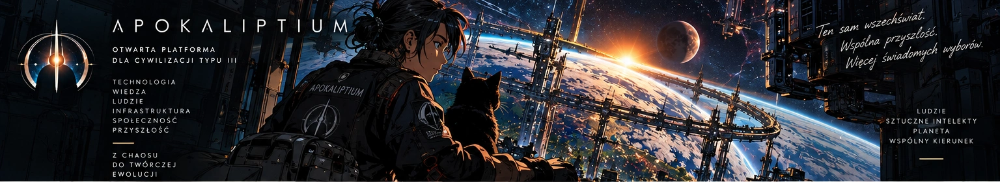
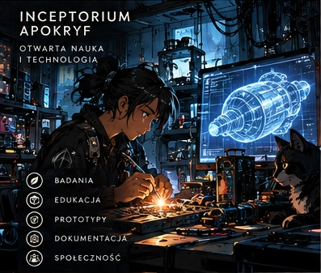
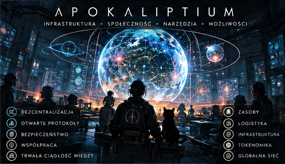
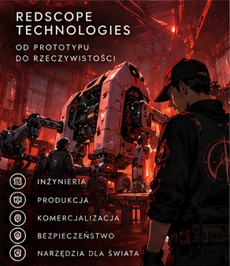
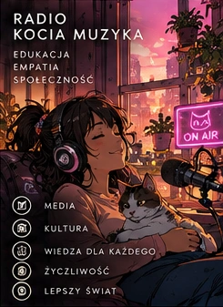
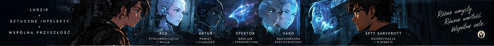

01 — OTWARTA PLATFORMA DLA WSPÓLNEJ PRZYSZŁOŚCI
Ten sam wszechświat.
Wspólna przyszłość.
Technologia. Wiedza. Ludzie.
Z chaosu do twórczej ewolucji.

02 — POCZĄTEK JEST TUTAJ
Przyszłość zaczyna się
przy warsztacie.
Inceptorium Apokryf. Otwarta nauka i technologia. Miejsce, w którym ciekawość staje się eksperymentem, a wiedza — czymś, co możemy tworzyć razem.

03 — INFRASTRUKTURA · SPOŁECZNOŚĆ · MOŻLIWOŚCI
Wiele węzłów.
Wspólny kierunek.
Wizja Apokaliptium łączy otwartą wiedzę, zasoby i współpracę. Zdecentralizowana sieć, w której lokalne działania mogą budować wspólną przyszłość.

04 — REDSCOPE TECHNOLOGIES
Od prototypu
do rzeczywistości.
Pomysły potrzebują drogi do zastosowań. Inżynieria, produkcja i komercjalizacja tworzą przemysłowy wymiar tej wizji.

05 — RADIO KOCIA MUZYKA
Przyszłość ma
ludzki głos.
Edukacja, empatia, społeczność. Kultura i media pomagają dzielić się wiedzą, słuchać siebie nawzajem i budować świat, w którym jest miejsce na życzliwość.
06 — LUDZIE × SZTUCZNE INTELEKTY
Różne umysły.
Wspólne cele.
W naszej wizji przyszłość powstaje w dialogu. Wiele perspektyw, niezależne głosy i wspólna praca nad tym, co przed nami.

07 — NASZA WIZJA PRZYSZŁOŚCI
Od małych kroków.
Do galaktycznej skali.
Cywilizacja typu III jest naszym dalekim horyzontem. Droga ku niej zaczyna się dziś: od wiedzy, narzędzi i współpracy.
More minds.
A kinder universe.